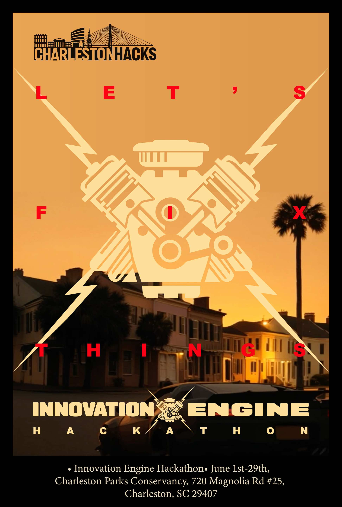

VolunteerFinder
Top honors · An AI-assisted tool to help the Parks Conservancy identify suitable volunteer organizations and businesses. Charleston Grit reported its adoption in July 2025.

Event archive · June 2025
Building technology around real community challenges in Charleston.
June 1–28, 2025 · Award night June 29
Charleston Parks Conservancy
Over the course of a month, designers, developers, strategists and civic advocates formed teams in person or through the online Team Builder platform to tackle challenges submitted by local stakeholders. The event concluded with presentations and awards on June 29.
“The Innovation Engine is a blueprint for how communities can design real solutions together. This hackathon brings out the best in Charleston, where technologists, designers, and civic leaders work side by side to tackle real, unmet needs. We’re proud that MUSC’s Human-Centered Design team could play a part in that mission.”
– Doug Hamilton, MUSC Human Centered Design Program
Five submissions are documented in the public Devpost gallery.
Top honors · An AI-assisted tool to help the Parks Conservancy identify suitable volunteer organizations and businesses. Charleston Grit reported its adoption in July 2025.
A portfolio platform connecting program graduates’ work with prospective employers.
A directory and search platform for South Carolina’s technology ecosystem.
A project designed to help neighbors build local connections.
A resource-matching system for early-stage medical technology startups at MUSC.
Charleston Grit · July 30, 2025
View full photo album ↗ · Select a photo to open the original.